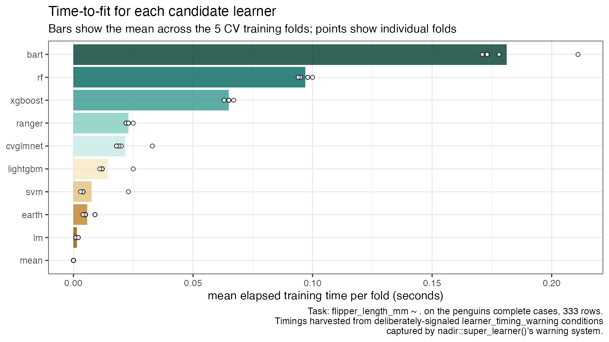

Timing Learners via the Warning System
Source:vignettes/articles/Timing-Learners-via-Warnings.Rmd
Timing-Learners-via-Warnings.Rmdnadir::super_learner() never lets learner warnings hit
your console: every warning signaled during training or prediction is
muffled, captured, and returned to you in
$warnings_from_training_cv_stage1,
$warnings_from_predicting_cv_stage2, and
$warnings_from_training_on_entire_data, each a list of
warning condition objects named by the learner that signaled
them.
A fun consequence: since warnings are captured as full condition objects (not just messages), the warning system doubles as a structured side-channel out of the training stage. Anything a learner wants to report about its own fitting process — without disturbing its return value, which must remain a prediction function — can be smuggled out as a classed warning condition carrying extra fields.
In this vignette we use that side-channel to answer a practical
question: which of my candidate learners are the slowest to
fit? We’ll write a learner-modifier,
add_learner_timing_warnings(), in the same spirit as
nadir::add_screener(): it takes a learner and returns a new
learner that behaves identically, except that it times its training step
and signals a formatted warning carrying the timing results.
Building add_learner_timing_warnings()
First, a small constructor for our custom warning condition. Giving
the condition its own class, learner_timing_warning, is
what lets us later distinguish deliberate timing warnings from
any organic warnings the learners happen to throw (rank-deficiency
complaints, convergence grumbles, and so on). Alongside the
human-readable message, we stash the raw
elapsed seconds and the learner’s name as structured
fields, so no message-parsing is needed downstream.
learner_timing_warning <- function(learner_name, timing) {
structure(
class = c("learner_timing_warning", "warning", "condition"),
list(
message = sprintf(
"[learner timing] %s: trained in %.3f seconds (elapsed) on %s",
learner_name,
timing[["elapsed"]],
format(Sys.time(), "%H:%M:%OS2")
),
call = sys.call(-1),
learner_name = learner_name,
elapsed = unname(timing[["elapsed"]])
)
)
}Now the modifier itself. Like all nadir learners, the
wrapped version is a function factory taking
(data, formula, ...) and returning a prediction function;
the only change is a system.time() around the training call
and a warning() signaling our classed condition afterwards.
We copy over the sl_lnr_name and sl_lnr_type
attributes so that automatic learner naming and outcome-type checking
keep working exactly as they would for the unwrapped learner.
add_learner_timing_warnings <- function(learner) {
learner_name <- attr(learner, 'sl_lnr_name')
if (is.null(learner_name)) {
learner_name <- 'unnamed_lnr'
}
timed_learner <- function(data, formula, ...) {
timing <- system.time({
trained_predictor <- learner(data = data, formula = formula, ...)
})
warning(learner_timing_warning(learner_name, timing))
return(trained_predictor)
}
attr(timed_learner, 'sl_lnr_name') <- learner_name
attr(timed_learner, 'sl_lnr_type') <- attr(learner, 'sl_lnr_type')
return(timed_learner)
}Note that because super_learner() muffles the warnings
it captures, wrapping learners this way adds no console noise at
all — even under parallel future plans, where the
capture happens inside the workers before results are collected.
Fitting a super learner on the penguins data
We’ll use the complete cases of the palmerpenguins data
and a library of six learners of rather different computational
temperaments, from the essentially free lnr_mean up through
random forests and gradient boosting.
penguins <- palmerpenguins::penguins
penguins <- penguins[complete.cases(penguins), ]
flipper_length_formula <-
flipper_length_mm ~ species + island + bill_length_mm +
bill_depth_mm + body_mass_g + sex
timed_learners <- lapply(
list(lnr_mean, lnr_lm, lnr_rf, lnr_earth, lnr_cvglmnet, lnr_xgboost,
lnr_svm, lnr_bart, lnr_lightgbm, lnr_ranger,
lnr_earth),
add_learner_timing_warnings)
set.seed(2026)
sl_model <- super_learner(
data = penguins,
formula = flipper_length_formula,
learners = timed_learners
)
#> Warning: package 'future' was built under R version 4.5.2Nothing was printed — but the timing warnings were captured. With the
default n_folds = 5, each learner signals five warnings
during the cross-validation training stage (one per training fold), plus
one more when it is refit on the entire dataset:
length(sl_model$warnings_from_training_cv_stage1)
#> [1] 55
length(sl_model$warnings_from_training_on_entire_data)
#> [1] 11
# the warnings are named by learner, and the messages are human-readable:
conditionMessage(sl_model$warnings_from_training_cv_stage1[[1]])
#> [1] "[learner timing] mean: trained in 0.000 seconds (elapsed) on 19:26:51.97"Extracting the timing warnings
Now we harvest our deliberate warnings back out. We filter each
warning field for conditions inheriting from
learner_timing_warning — leaving any organic learner
warnings untouched — and assemble the structured $elapsed
fields into a tidy data frame.
extract_learner_timings <- function(sl_model) {
warning_fields <- c(
cv_training = 'warnings_from_training_cv_stage1',
full_data_fit = 'warnings_from_training_on_entire_data')
do.call(rbind, lapply(names(warning_fields), function(stage) {
warnings_list <- sl_model[[warning_fields[[stage]]]]
timing_warnings <- Filter(
function(w) inherits(w, 'learner_timing_warning'),
warnings_list)
if (length(timing_warnings) == 0) return(NULL)
data.frame(
learner = vapply(timing_warnings, `[[`, character(1), 'learner_name'),
stage = stage,
elapsed = vapply(timing_warnings, `[[`, numeric(1), 'elapsed')
)
}))
}
learner_timings <- extract_learner_timings(sl_model)
head(learner_timings)
#> learner stage elapsed
#> 1 mean cv_training 0.000
#> 2 mean cv_training 0.000
#> 3 mean cv_training 0.000
#> 4 mean cv_training 0.000
#> 5 mean cv_training 0.000
#> 6 lm cv_training 0.002Visualizing which learners are fastest to fit
Averaging the per-fold training times gives us a bar chart of mean time-to-fit per learner, with the individual fold timings overlaid as points so the fold-to-fold variability is visible too.
cv_timings <- learner_timings[learner_timings$stage == 'cv_training', ]
mean_timings <- aggregate(elapsed ~ learner, data = cv_timings, FUN = mean)
mean_timings$learner <- reorder(mean_timings$learner, mean_timings$elapsed)
cv_timings$learner <- factor(cv_timings$learner, levels = levels(mean_timings$learner))
ggplot(mean_timings, aes(x = elapsed, y = learner, fill = learner)) +
geom_col(alpha = .8) +
geom_point(data = cv_timings, shape = 21, fill = 'white', alpha = .75) +
# scale_fill_brewer(palette = 'Set2', guide = 'none') +
scale_fill_brewer(palette = 'BrBG', guide = 'none') +
theme_bw() +
labs(
x = "mean elapsed training time per fold (seconds)",
y = NULL,
title = "Time-to-fit for each candidate learner",
subtitle = "Bars show the mean across the 5 CV training folds; points show individual folds",
caption = "Task: flipper_length_mm ~ . on the penguins complete cases, 333 rows.
Timings harvested from deliberately-signaled learner_timing_warning conditions
captured by nadir::super_learner()'s warning system.") +
theme(plot.caption.position = 'plot')
Unsurprisingly, lnr_mean and lnr_lm are
effectively free, while the tree-ensemble learners dominate the fitting
budget. Since timing warnings are signaled once per training call, this
approach extends without modification to cv_super_learner()
and crossfit_super_learner(), whose outputs aggregate the
same captured-warning fields across their outer folds.
Two closing remarks on the pattern itself. First, a warning is not an error: a timing-wrapped learner keeps its weight-eligibility, its predictions, and its place in the ensemble entirely unchanged — we can confirm the wrapped learners were named and weighted as usual:
round(sl_model$learner_weights, 3)
#> mean lm rf earth_1 cvglmnet xgboost svm bart
#> 0.000 0.321 0.392 0.000 0.000 0.000 0.287 0.000
#> lightgbm ranger earth_2
#> 0.000 0.000 0.000Second, nothing about this trick is specific to timing. Any per-fit
diagnostic — memory use, number of boosting rounds actually run,
screening decisions — can ride the same classed-condition side-channel
out of the training stage and back to you through
super_learner()’s captured warnings.